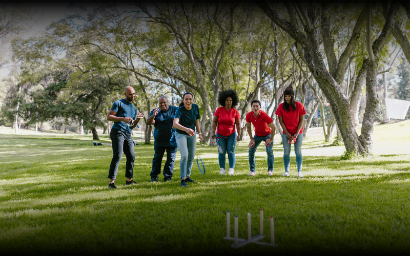

L'Alsace a un avantage que peu de régions peuvent revendiquer : en 45 minutes de route, on passe d'un vignoble à une forêt vosgienne, d'une ville médiévale à une zone industrielle reconvertie. Cette diversité géographique se traduit directement en diversité d'activités, ce qui simplifie sérieusement le casse-tête du "qu'est-ce qu'on fait cette année".
Voici 10 idées qui fonctionnent vraiment pour fédérer une équipe, classées sans ordre de préférence particulier, parce que la meilleure activité, c'est avant tout celle qui correspond à votre équipe, pas celle qui fait le plus joli post LinkedIn.
La valeur sûre, et pour de bonnes raisons. Une heure enfermés ensemble face à des énigmes, ça révèle qui prend les décisions, qui écoute les autres, et qui range frénétiquement la pièce sans aider personne. Excellent pour travailler la communication et la logique collective sous pression, sans les enjeux d'une vraie réunion de crise.
Voir l'escape game disponible en Alsace →Format classique, efficacité jamais démentie. Équipes mêlées, épreuves variées, un peu de compétition saine et beaucoup de rires en revoyant les photos le lendemain. Idéal pour les grands groupes et les équipes qui ont besoin de bouger après une matinée de séminaire assis sur une chaise.
L'activité insolite par excellence, et étonnamment efficace. Une hache, une cible en bois, un animateur qui vous jure que c'est plus simple qu'il n'y paraît. Au-delà du côté fun, viser une cible demande une vraie concentration et un certain lâcher-prise, exactement ce qu'il faut pour décompresser après un trimestre chargé.
Voir le lancer de hache à Wittenheim →Un mix entre course d'obstacles et jeu de rôle grandeur nature, où l'équipe traverse une série d'épreuves physiques et mentales scénarisées. Le format pousse chacun à sortir un peu de sa zone de confort, sans jamais aller jusqu'à l'inconfort réel. Parfait pour les équipes qui aiment l'aventure sans vouloir y laisser une cheville.
Strasbourg, Colmar ou Mulhouse transformées en terrain de jeu : énigmes à résoudre, indices à trouver, patrimoine local à (re)découvrir. C'est l'activité qui marche aussi bien pour une équipe locale qu'internationale, tout le monde redécouvre la ville sous un angle différent, smartphone en main et plan en poche.
Voir le rallye gourmand à Colmar →En Alsace, ne pas faire un atelier autour de la table relèverait presque de la faute professionnelle. Cuisine collective, dégustation de vins ou de bières artisanales, atelier bredele : le format favorise naturellement la convivialité et l'échange. Le seul risque : que tout le monde reparte avec une nouvelle passion pour le Gewurztraminer.
Randonnée dans le massif des Vosges, défis outdoor, jeux de piste en forêt : le format idéal pour les équipes qui passent trop de temps devant un écran (donc, toutes les équipes). 20 minutes en extérieur suffisent à faire baisser le cortisol de façon mesurable. Une journée complète, et c'est l'équipe entière qui revient changée.
Voir les activités nature en Alsace →Peinture collective, poterie alsacienne, street art ou DIY : la création manuelle a ceci de précieux qu'elle annule complètement les hiérarchies habituelles. Le directeur qui rate sa première poterie et le stagiaire qui s'en sort très bien, c'est exactement le genre de moment qui rapproche une équipe sans qu'on ait besoin de l'expliquer.
Voir les ateliers créatifs en Alsace →Manches thématiques, jokers stratégiques, esprit de compétition assumé : le quiz reste l'un des formats les plus simples à organiser et les plus appréciés. Accessible à tous, des plus jeunes recrues aux plus anciens de la maison, et redoutablement efficace pour clôturer une journée de séminaire en beauté.
Voir le format quiz disponible →Casques sur la tête, missions collaboratives, et une équipe qui découvre ensemble un univers que personne ne maîtrise, donc tout le monde est à égalité. La technologie au service de la collaboration : même les plus sceptiques en ressortent généralement convaincus, ce qui n'est pas rien.
Voir les expériences VR en Alsace →
🎯 En résumé
L'Alsace offre une variété d'activités suffisamment large pour s'adapter à pratiquement tous les profils d'entreprise, des équipes commerciales qui veulent de l'adrénaline aux comités de direction qui cherchent à décompresser, en passant par les équipes internationales pour qui un atelier culturel local vaut toutes les présentations PowerPoint du monde.
La vraie question à se poser n'est pas "quelle est la meilleure activité" mais "quelle est la meilleure activité pour cette équipe, à ce moment précis". Et ça, ça vaut le coup d'y réfléchir 10 minutes avant de réserver.
Trouvez l'activité parfaite pour votre équipe
Filtrez par ville, budget, format et objectif. Toutes les activités de team building en Alsace au même endroit.
Voir toutes les activités →